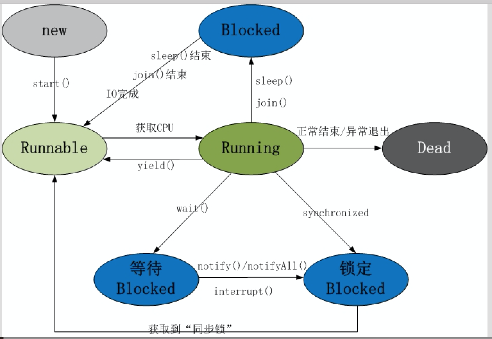

x
xxxxxxxxxx1.进程和线程1.1 进程的介绍1.2 线程的介绍1.3 进程和线程的关系以及区别2.多线程的实现2.1 继承Thread类2.2 实现Runnable接口2.3 两种实现方式的比较2.4 调用start()和run()方法的区别3.线程的常用方法3.1 线程的名称3.2 线程休眠3.3 设置线程优先级3.4 合并线程3.5 后台线程3.6 线程让步4.线程的生命周期
xxxxxxxxxx1.掌握进程和线程的概念以及二者之间的区别2.掌握多线程的实现方式3.了解线程常用方法的使用4.掌握线程的生命周期
xxxxxxxxxx是一个程序的运行状态和资源占用（内存，CPU）的描述进程是程序的一个动态过程,它指的是从代码加载到执行完毕的一个完成过程进程的特点：a.独立性：不同的进程之间是独立的，相互之间资源不共享（举例：两个正在上课的教室有各自的财产，相互之间不共享）b.动态性：进程在系统中不是静止不动的，而是在系统中一直活动的c.并发性：多个进程可以在单个处理器上同时进行，且互不影响
xxxxxxxxxx是进程的组成部分，一个进程可以有多个线程，每个线程去处理一个特定的子任务线程的执行是抢占式的，多个线程在同一个进程中可以并发执行，其实就是CPU快速的在不同的线程之间切换，也就是说，当前运行的线程在任何时候都有可能被挂起，以便另外一个线程可以运行
xxxxxxxxxxa.一个程序运行后至少有一个进程b.一个进程可以包含多个线程，但是至少需要有一个线程，否则这个进程是没有意义的c.进程间不能共享资源，但线程之间可以d.系统创建进程需要为该进程重新分配系统资源，而创建线程则容易的多，因此使用线程实现多任务并发比多进程的效率高e.系统创建进程需要为该进程重新分配系统资源，而创建线程则容易的多，因此使用线程实现多任务并发比多进程的效率高
xxxxxxxxxx继承自Thread类，Thread类是所有线程类的父类，实现了对线程的抽取和封装继承Thread类创建并启动多线程的步骤：a.定义一个类，继承自Thread类，并重写该类的run方法，该run方法的方法体就代表了线程需要完成的任务，因此，run方法的方法体被称为线程执行体b.创建Thread子类的对象，即创建了子线程c.用线程对象的start方法来启动该线程
代码实现：
xxxxxxxxxxpublic class ThreadUsageDemo01 { public static void main(String[] args) { //实际的子线程 MyThread t0 = new MyThread(); t0.setName("线程000"); t0.start(); MyThread t1 = new MyThread(); t1.setName("线程111"); t1.start(); /** * static Thread currentThread() 返回对当前正在执行的线程对象的引用。 */ //这个方法的调用在哪个线程的线程执行体中，则指的是哪个当前正在执行的线程 Thread thread = Thread.currentThread(); System.out.println(thread);//Thread[main,5,main] //Thread[Thread-0,5,main] //Thread[Thread-1,5,main] //Thread[线程的名字，线程的执行优先级，在哪个线程中创建的] System.out.println(thread.getName());//main //设置线程的名字 thread.setName("主线程"); System.out.println(thread.getName()); //通过构造方法设置线程的名字 MyThread1 t2 = new MyThread1("新的线程~~~~"); t2.start(); }}//线程类class MyThread extends Thread { public void run() { for(int i = 0;i < 10;i++) { System.out.println("hello" + i); } Thread thread = Thread.currentThread(); System.out.println(thread); System.out.println(thread.getName()); }}class MyThread1 extends Thread { public MyThread1() {} public MyThread1(String name) { super(name);//调用的父类中的Thread(String name) } public void run() { Thread thread = Thread.currentThread(); System.out.println(thread.getName()); }}案例：模拟售票员售票
xxxxxxxxxxpublic class ThreadTextDemo01 { public static void main(String[] args) { //需求：模拟4个售票员售100张票 SellTickets s1 = new SellTickets(); SellTickets s2 = new SellTickets(); SellTickets s3 = new SellTickets(); SellTickets s4 = new SellTickets(); s1.start(); s2.start(); s3.start(); s4.start(); }}class SellTickets extends Thread { //共享数据 static int count = 100; public void run() { //循环售票 while(count > 0) { count--; System.out.println(Thread.currentThread().getName() + "售出了一张票，剩余" + count); } }}xxxxxxxxxx实现Runnable接口创建并启动多线程的步骤：a.定义一个Runnable接口的实现类，并重写该接口中的run方法，该run方法的方法体同样是该线程的线程执行体b.创建Runnable实现类的实例，并以此实例作为Thread的target来创建Thread对象，该Thread对象才是真正的线程对象c.调用线程对象的start方法来启动该线程
xxxxxxxxxxpublic class ThreadUsageDemo02 { public static void main(String[] args) { //并不是线程对象 Check c = new Check(); /** * Thread(Runnable target) 分配新的 Thread 对象。 */ Thread t0 = new Thread(c); t0.start(); Thread t1 = new Thread(c); t1.start(); }}//实现类class Check implements Runnable { public void run(){ for(int i = 0;i < 10;i++) { System.out.println(i); } }}案例：模拟售票员售票
xxxxxxxxxxpublic class ThreadTextDemo02 { static int count = 100; static Runnable r = new Runnable() { public void run() { while(count > 0) { count--; System.out.println(Thread.currentThread().getName() + "售出了一张票，剩余" + count); } } }; public static void main(String[] args) { Thread t0 = new Thread(r); Thread t1 = new Thread(r); Thread t2 = new Thread(r); Thread t3 = new Thread(r); t0.start(); t1.start(); t2.start(); t3.start(); }}xxxxxxxxxx实现Runnable接口的方式a.线程类只是实现了Runnable接口，还可以继承其他类【一个类在实现接口的同时还可以继承另外一个类】b.可以多个线程共享同一个target对象，所以非常适合多个线程来处理同一份资源的情况c.弊端：编程稍微复杂，不直观，如果要访问当前线程，必须使用Thread.currentThread()继承Thread类的方式a.编写简单，如果要访问当前线程，除了可以通过Thread.currentThread()方式之外，还可以使用super关键字b.弊端：因为线程类已经继承了Thread类，则不能再继承其他类【单继承】实际上大多数的多线程应用都可以采用实现Runnable接口的方式来实现【推荐使用匿名内部类】
xxxxxxxxxx当调用start()方法时将创建新的线程，并且执行run()方法里的代码，但是如果直接调用start()方法，不会创建新的线程也不会执行调用线程的代码
xxxxxxxxxx在前面ThreadUsageDemo01中有体现
xxxxxxxxxx使得当前正在执行的线程休眠一段时间，释放时间片，导致线程进入阻塞状态sleep（5000），5000的单位是毫秒，设置了sleep就相当于将当前线程挂起5s,这个操作跟线程的优先级无关，当对应的时间到了之后，还会再继续执行
代码实现：
xxxxxxxxxxpublic class ThreadFunctionDemo01 { static Runnable r = new Runnable() { public void run() { while(true) { System.out.println(Thread.currentThread().getName() + "在执行"); //设置线程休眠 try { Thread.sleep(1000); } catch (InterruptedException e) { // TODO Auto-generated catch block e.printStackTrace(); } } } }; public static void main(String[] args) { Thread t0 = new Thread(r); t0.setName("线程000"); t0.setPriority(8); t0.start(); Thread t1 = new Thread(r); t1.setName("线程111"); t1.setPriority(3); t1.start(); }}xxxxxxxxxx可以通过设置优先级来改变线程抢到时间片的概率，优先级高的线程获得较多的执行机会默认情况下，每个线程的优先级都与创建它的父线程具有相同的优先级，例如：main线程具有普通优先级，则由main线程创建的子线程也有相同的普通优先级注意：所传的参数范围1~10，默认为5，对应的数值越大，说明优先级越高，这个方法的设置一定要在start之前线程的优先级低并不意味着争抢不到时间片，只是抢到时间片的概率比较低而已
xxxxxxxxxx在ThreadFunctionDemo01中
xxxxxxxxxx在执行原来线程的过程中，如果遇到了合并线程，则优先执行合并进来的线程，执行完合并进来的线程后，再回到原来的任务中，继续执行原来的线程特点：a.线程合并,当前线程一定会释放cpu时间片,cpu会将时间片分给要Join的线程b.哪个线程需要合并就在当前线程中,添加要合并的线程c.join之前,一定要将线程处于准备状态start
代码实现：
xxxxxxxxxxpublic class JoinFunctionDemo01 { public static void main(String[] args) { //CustomThread thread = new CustomThread("新的线程"); //thread.start(); for(int i = 0;i < 100;i++) { System.out.println(Thread.currentThread().getName() + i); if(i == 20) { //合并线程 CustomThread thread = new CustomThread("新的线程"); thread.start(); //将需要合并的线程join //优先执行合并进来的线程 try { thread.join(); } catch (InterruptedException e) { // TODO Auto-generated catch block e.printStackTrace(); } } } }}class CustomThread extends Thread { public CustomThread(){} public CustomThread(String name) { super(name); } public void run() { for(int i = 0;i < 100;i++) { System.out.println(Thread.currentThread().getName() + i); } }}xxxxxxxxxx隐藏起来一直在默默运行的线程，直到进程结束，又被称为守护线程或精灵线程，JVM的垃圾回收线程就是典型的后台线程特征：如果所有的前台线程都死亡，后台线程会自动死亡，必须要在start之前执行
代码实现：
xxxxxxxxxxpublic class DeamonFunctionDemo { public static void main(String[] args) { DaemonThread thread = new DaemonThread(); //设置后台线程 thread.setDaemon(true); thread.start(); //主线程的任务 for(int i = 0; i < 10;i++) { System.out.println(Thread.currentThread().getName() + i); } }}class DaemonThread extends Thread { public void run() { for(int i = 0;i < 1000;i++) { System.out.println(Thread.currentThread().getName() + i); } }}xxxxxxxxxx可以让当前正在执行的线程暂停，但它不会阻塞该线程，他只是将该线程转入就绪状态，完全可能出现的情况是：当某个线程调用了yield方法暂停之后，线程调度器又将其调度出来重新执行实际上，当某个线程调用了yield方法暂停之后，只有优先级与当前线程相同，或者优先级比当前线程更高的就绪状态的线程才会获得执行的机会
代码实现：
xxxxxxxxxxpublic class YieldFunctionDemo01 { public static void main(String[] args) { YieldThread t0 = new YieldThread("线程000"); //t0.setPriority(8); t0.start(); YieldThread t1 = new YieldThread("线程111"); t1.start(); }}class YieldThread extends Thread { public YieldThread(){} public YieldThread(String name) { super(name); } public void run() { for(int i = 0;i < 50;i++) { System.out.println(Thread.currentThread().getName() + " " + i); if(i==20) { //线程让步，不会让线程进入阻塞状态 Thread.yield(); } } }}xxxxxxxxxx对于线程，当线程被创建并启动之后，它既不是一启动就进入了执行状态，也不是一直处于执行状态，在线程的生命周期中，他会经历各种不同的状态【在一个进程中，多个线程同时运行，是在争抢CPU时间片】
xxxxxxxxxxNew(新生)：线程被实例化，但是还没有开始执行Runnable（就绪）:没有抢到时间片Running（运行）:抢到了时间片，CPU开始处理这个线程中的任务Blocked(阻塞): 线程在执行过程中遇到特殊情况，使得其他线程就可以获得执行的机会，被阻塞的线程会等待合适的时机重新进入就绪状态Dead(死亡):线程终止a.run方法执行完成，线程正常结束【正常的死亡】b.直接调用该线程的stop方法强制终止这个线程

xxxxxxxxxx
xxxxxxxxxx注：异常直接在main函数声明部分throws Exception即可1.使用转换流实现文件内容的拷贝2.将一个自定义类的对象写入本地文件中，然后再读取出来
xxxxxxxxxx1.设计两个线程，一个线程负责求出1~１０以内所有的偶数；然后，另外一个线程负责打印1~１０以内所有的奇数。测试时，分别设置线程的优先级，观察执行的顺序。2.贵妇正在看电视连续剧《芈月传》，从第1~88集，看到第10集时，来了一个送快递的，贵妇收完快递后后，继续看电视。3.多线程模拟龟兔赛跑：乌龟和兔子进行1000米赛跑，兔子前进5米，乌龟只能前进1米。但兔子每20米要休息500毫秒，而乌龟是每100米休息500毫秒。谁先到终点就结束程序，并显示获胜方4.编写多线程应用程序，模拟多个人通过一个山洞的模拟。这个山洞每次只能通过一个人，每个人通过山洞的时间为5秒，随机生成10个人，同时准备过此山洞，显示一下每次通过山洞人的姓名
xxxxxxxxxx1.简述进程和线程各自的特点以及二者之间的区别与联系2.简述线程的生命周期3.线程的创建方式以及之间的区别和联系4.sleep()方法和yield()方法之间的区别